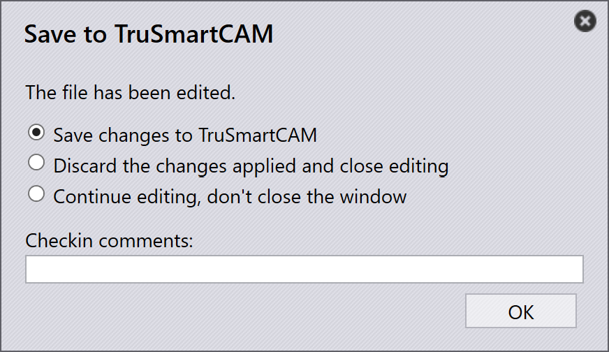

Tooling-validering
Detta avsnitt beskriver hur du kommer åt och ändrar tooling-informationen för detaljer i TruSmartCAM.
-
Högerklicka på en detaljbricka för att öppna detaljpanelen och komma åt tooling-alternativen.

-
Klicka på Toolings för att växla till den första tillgängliga toolade instansen.
-
Alternativt kan du klicka direkt på en toolad instans för att visa maskindetaljer och tooling-alternativ.
-
Använd
 för att
Open in read-only mode for viewing.
för att
Open in read-only mode for viewing. -
Använd
 för att
Check-out the document for editing.
för att
Check-out the document for editing. -
Den valda toolade instansen öppnas i TecZone eller MetaCAM.
-
Utför manuella tooling-kontroller och gör nödvändiga ändringar.
-
När du försöker spara visas dialogrutan Unsaved Changes som ber dig bekräfta dina ändringar.
-
Klicka på Yes för att fortsätta med att spara.
-
Systemet utför Tooling Validation igen efter att du sparat.
-
Om det inte finns några fel visas alternativet att spara ändringar till TruSmartCAM.
-
Om tooling-fel hittas visas ett felmeddelande:

-
Efter att du sparat uppdateras detaljens tooling-status i detaljbiblioteket.
-
En grön färg på den toolade instansen indikerar att den är incheckad.

-
Toolade Instance Author uppdateras till den senaste person som redigerade den.
-
Fältet User-edited indikerar om den toolade instansen har ändrats manuellt. När en användare checkar ut instansen och gör några ändringar sätts detta fält automatiskt till Yes vid sparande.

-
Om en detalj för närvarande redigeras visas en användarikon på dess bricka.
-
När du håller muspekaren över brickan visas vem som checkade ut den och tidpunkten då den checkades ut.
-
Medan detaljen är utcheckad är alternativet
Check-out the document for editing inaktiverat för
samma toolade instans, och alternativet  Cancel Check-out blir aktiverat.
Cancel Check-out blir aktiverat.